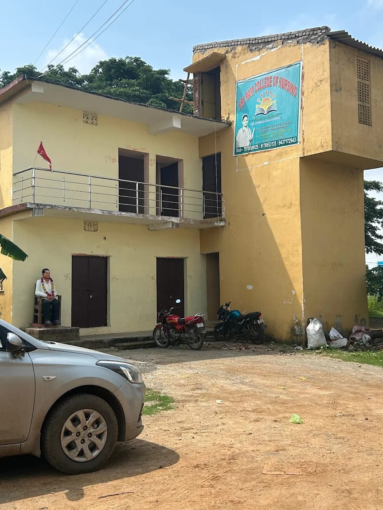

Vision
To support the development of knowledgeable, compassionate and responsible healthcare professionals.

Campus photograph temporarily unavailable.
About the Institution
Nursing education brings together knowledge, practical understanding and compassion. Our proposed educational approach places academic growth, responsible practice and respect for people at the heart of a student's development.
Sriram College of Nursing is located near the R.T.O. Office in Kasoti, Pandiri, Kendrapara, Odisha. Contact the college for verified course and admission information.
Draft introduction: replace with the college's approved institutional profile before publication.
Call the collegeOur Direction
Proposed statements for review, not the college's official Vision and Mission.
To support the development of knowledgeable, compassionate and responsible healthcare professionals.
To support nursing education through academic learning, practical understanding and student-focused development.